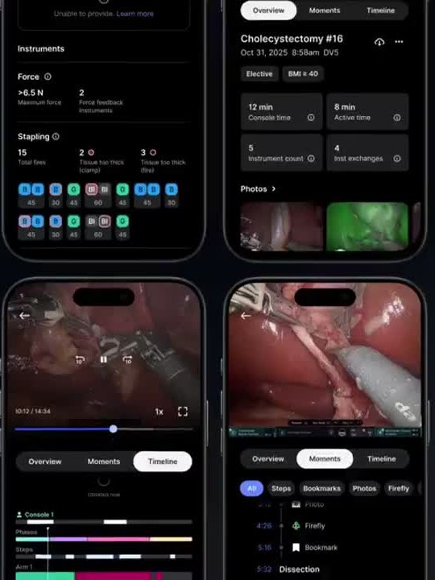
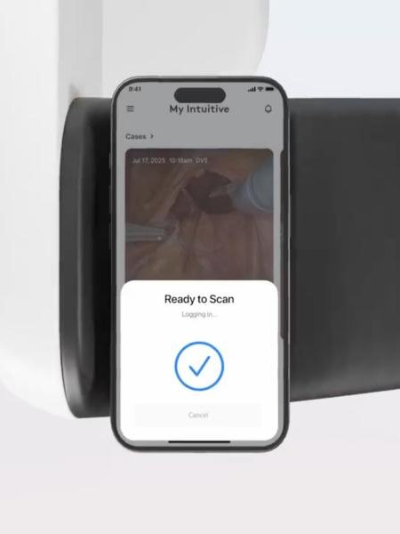
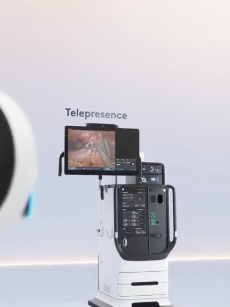
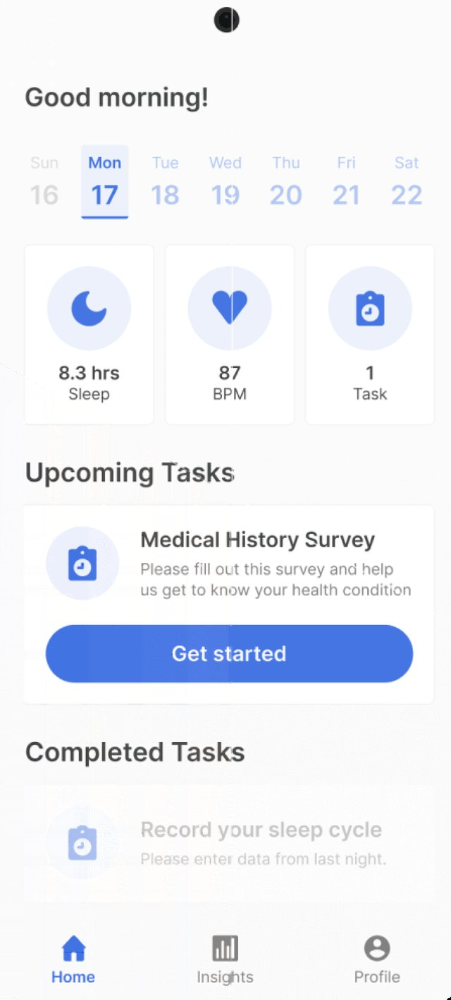
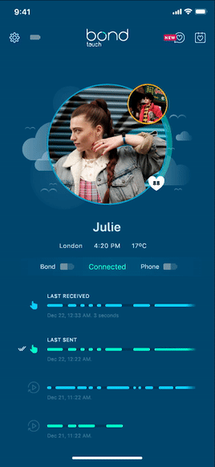
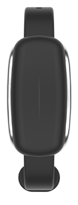
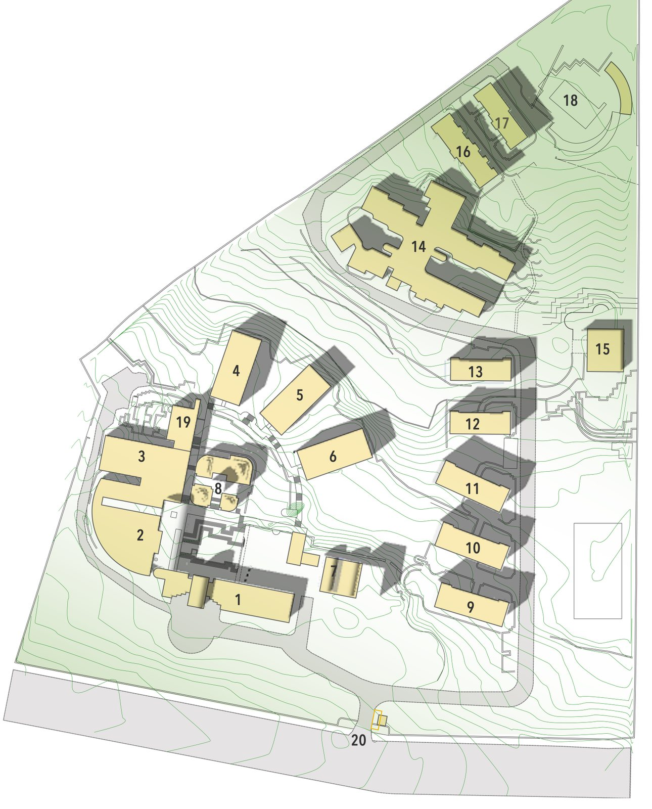
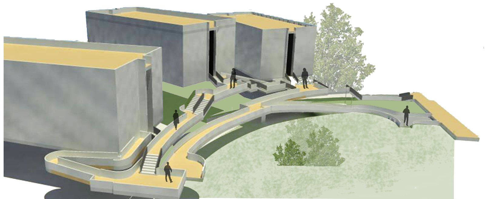
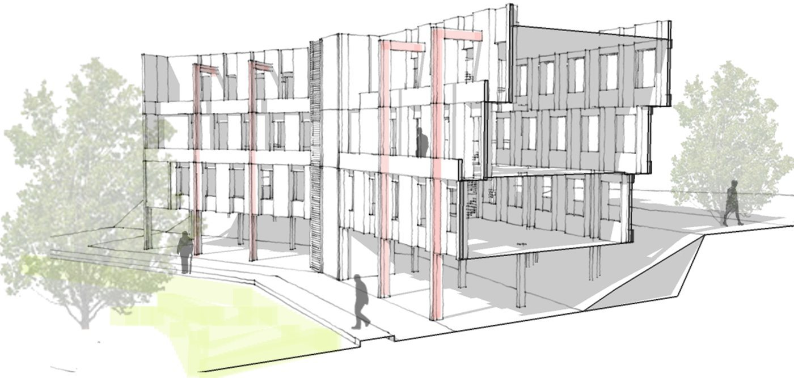
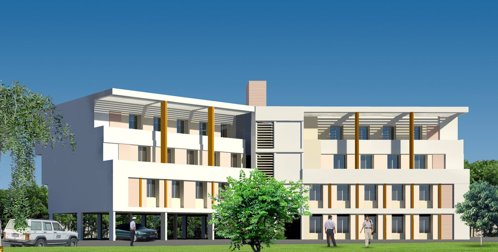

Intuitive Surgical
Currently leading a team of 6 designers designing My Intuitive, a digital platform that connects Intuitive products and services, helping customers navigate complex workflows with ease.
Sr IC → Staff IC → Managing Staff → Senior Design Manager
2020 – Present
-

Case review in My Intuitive
Surgeons replay their procedures with key moments, instrument data and a step-by-step timeline, right on their phone.
-

One-tap login to da Vinci 5
Surgeons tap their phone with the My Intuitive app to sign in to the da Vinci 5 surgical system.
-

Telepresence
Lets surgeons teach and learn across locations, sharing a live view from the surgical console.
Impossible Labs
I worked on a variety of 0 → 1 projects as a designer and researcher. A design agency based in Portugal, we were a tightly knit team of designers, where we worked hard, had fun and learnt a lot along the way.
Jr IC → Sr IC
2015 – 2020
-

navify Clinical Hub for Tumor Boards
Software from Roche that helps cancer care teams plan, run and follow up on tumor board meetings, with patient cases, guidelines and trial matching in one place.
-

Samsung Research America
Mobile and wearable apps that let patients share symptoms and sensor data with their care teams, piloted in clinical studies for heart, lung and cancer care.
-


Bond Touch
Connected bracelets for long-distance couples and families. A tap on one bracelet arrives as a gentle vibration and light on the other, wherever they are.
Architectural Practice
Led projects in a medium sized architecture firm in Mumbai. Did the complete project cycle from business development, design and approval cycles with clients, cost estimations, execution supervision on site and billing.
Jr Architect → Lead Architect → Associate
2007 – 2014



